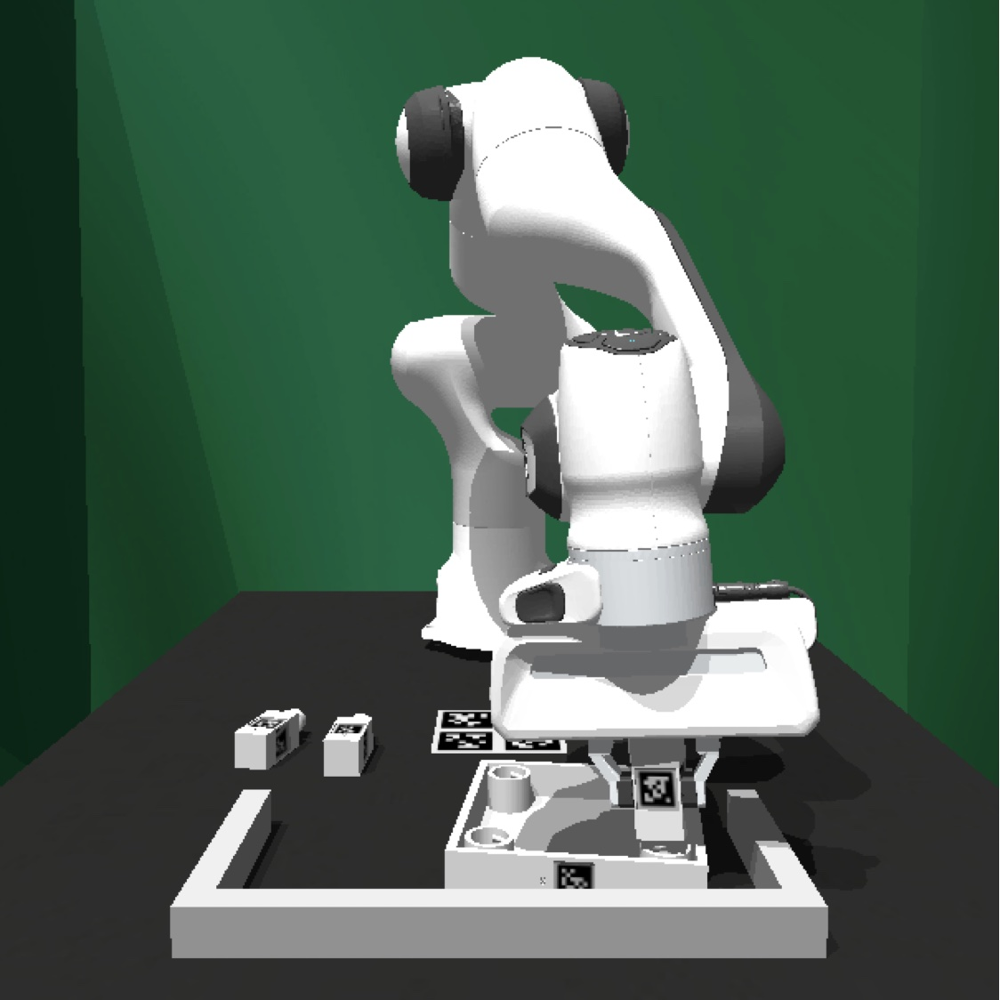

Installation Guide (FurnitureSim)
Contents
Installation Guide (FurnitureSim)#
FurnitureSim is a high-speed and realistic simulation of FurnitureBench, built using IsaacGym and Factory. It is designed to be a seamless substitution of the real-world environment, and enables rapid prototyping of new algorithms.
|
 |
|
|---|---|---|
(a) Real-world environment |
(b) Simluator |
(c) Offline rendering |


Now we will take a look how to install FurnitureSim. You can install FurnitureSim using Docker or from source.
Installation using Docker (Option 1)#
We provide a docker image that includes everything needed for FurnitureSim. To use FurnitureSim, you only need to run our docker image.
Download IsaacGym from NVIDIA Developer. Start by creating an NVIDIA account, agree to the terms and conditions, and then download Isaac Gym - Ubuntu Linux 18.04 / 20.04 Preview 4 release. Unzip the downloaded file and move the folder to the desired location.
üìñ Download nvidia-docker2
In case you initiate, execute the GPU-supported client Docker by following Run Client.
Local Installation (Option 2)#
If you need FurnitureSim in your own environment, you can install FurnitureSim by manually installing dependencies as follows:
(Optional) Create and activate a conda environment:
conda create -n furniture-bench python=3.8 conda activate furniture-bench
Download IsaacGym from https://developer.nvidia.com/isaac-gym and install it:
cd </path/to/isaacgym> cd python pip install -e isaacgym
Clone and install IsaacGymEnvs:
git clone https://github.com/NVIDIA-Omniverse/IsaacGymEnvs pip install -e IsaacGymEnvs
Clone and install FurnitureBench:
git clone https://github.com/clvrai/furniture-bench.git pip install -e furniture-bench
Install other dependencies:
conda install mamba -c conda-forge mamba install -c pytorch -c fair-robotics -c aihabitat -c conda-forge polymetis pip install -r requirements.txt
Install PyTorch again if you want another PyTorch version (Polymetis overrides PyTorch). As an example, we install PyTorch 1.10 with CUDA 11.3:
conda install pytorch==1.10 torchvision cudatoolkit=11.3 -c pytorch
Running FurnitureSim#
Run Docker image#
Run the docker image if you did not install the code with local installation.
Set the environment variables
# With display xhost + export CLIENT_DOCKER=client-gpu # (Case1: local build) export CLIENT_DOCKER=furniturebench/client-gpu:latest # (Case2: docker pull) # Set absolute path to the furniture-benchmark repo export FURNITURE_BENCH=</path/to/furniture-benchmark> # Isaac Gym absolute path export ISAAC_GYM_PATH=</path/to/isaacgym> # path to isaacgym downloaded from https://developer.nvidia.com/isaac-gym # Launch the image cd $FURNITURE_BENCH ./launch_client.sh --sim-gpu
Test Run for Simulator#
cd /furniture-bench
# args: --furniture [lamp | square_table | desk | drawer | cabinet | round_table | stool | chair | one_leg]
python furniture_bench/scripts/run_sim_env.py --furniture square_table --no-action
# Headless
python furniture_bench/scripts/run_sim_env.py --furniture square_table --no-action --headless
Tip
In FurnitureSim, the 3D furniture models from FurnitureBench are transformed into the Signed Distance Function (SDF) format for use in the simulation. The first time the simulator is run, it will take some time (~ few minutes) to generate the SDF meshes, but subsequent runs will be faster as the simulator can load the pre-cached SDF meshes.
FurnitureSim Parameters#
Simulation parameters including mass, inertia, dt, etc. can be found in furniture_bench/sim_config.py.
Supported Furniture Models#
The simulator currently supports the following furniture models. Automatic assembly scripts for all furniture models will be available in May 2023. The 3D models for all furniture are partially complete. Additionally, other models do not yet have the AprilTag marker texture applied yet, but it will be updated soon.
Furniture
Assembly script
3D model
lamp
⏳
üîú
square_table
⏳
✔️
desk
⏳
üîú
round_table
⏳
üîú
stool
⏳
üîú
chair
⏳
üîú
drawer
⏳
üîú
cabinet
⏳
üîú
one_leg
✔️
✔️